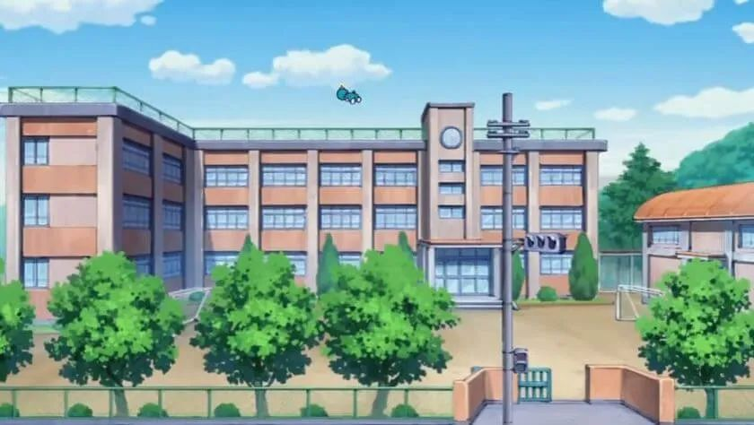
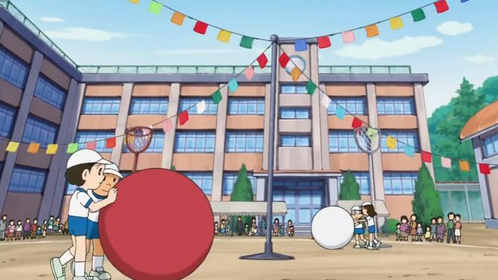
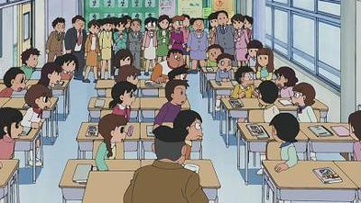

學校 |
|  |
概述學校是大雄上學讀書的地方，日本的上課時間是上午 9 點到下午 3 點。據說大雄家離學校的腳程約 15 分鐘，因此大雄經常睡過頭遲到，被老師叫到走廊上罰站。校外的路蠻大條的。學校的建築 |
 學校的運動場辦活動的模樣 |
|
在水田版《哆啦A夢》動畫中，學校是一棟 3 層樓的建築物，正門樓梯間外牆靠近頂樓，有一個大型的時鐘。右側有體育場般的建築，體育場的門口左側有花圃。體育場與學校主體間有風雨走廊存在。 校門與學校建築主體間的大空地就是操場。大雄他們的體育課就會在操場上，操場上有足球的球門，也可以用來打棒球、跑步、做體操等活動。操場前有簡單的講台，大型集會應該也是在操場集合。女孩子們有時會在體育場門口的花圃幫忙照顧花草。 除此之外，學校裡至少有游泳池、也有擁有鋼琴的音樂教室。 大雄的班級 |
|---|
 大雄的班上 |
|
大雄的教室位在 1 樓。不過座位在漫畫與動畫中都不一定，可能是有時候會換座位吧，大雄有時候坐靠窗，有時候則坐內側，不過都是 2 人一個座位，班上人數約有 20 餘人。教室後側貼有大家的書法作品，經常可以看到上面寫著「希望」等漢字。 大雄在學校裡有許多不堪的記憶，比方說：罰站、打瞌睡、考試考零分、被老師訓話、放學後留下來補功課、被胖虎小夫作弄等。 除了我們經常看到的大雄老師之外，有時候也有一些科任老師，比如體育老師有時就不是同一個人上課；而學校的校長大雄則不常接觸，是一個頂著大光頭、臉有點倒三角形的長者。 |